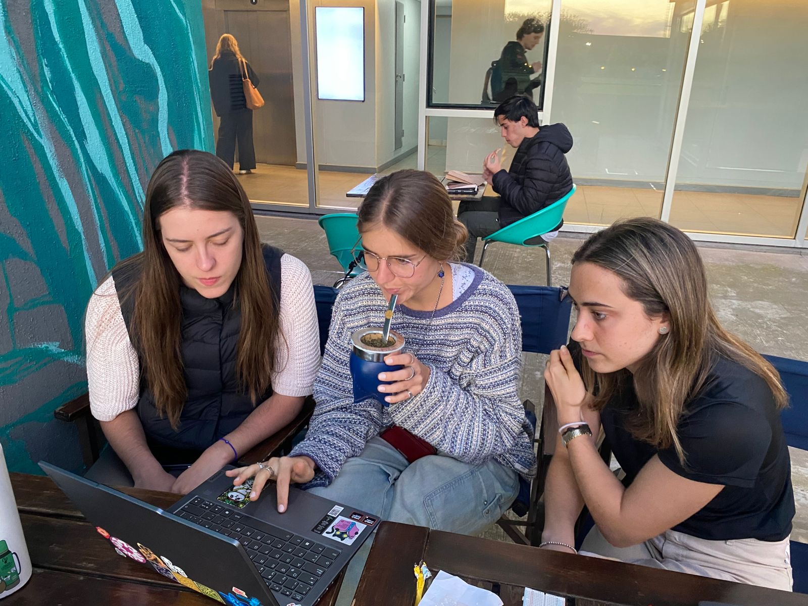

Hacemos la ciencia del movimiento accesible
Somos un equipo de ingenieras dedicadas al desarrollo de soluciones tecnológicas que mejoren la calidad de vida de las personas con enfermedad de Parkinson. Nuestro proyecto, Motio, integra herramientas terapéuticas y de medición objetiva pensadas para el uso ambulatorio, permitiendo acompañar al paciente más allá del entorno clínico.
Trabajamos en tres líneas complementarias:
Nuestra misión es acercar herramientas confiables, reproducibles y fáciles de usar que ayuden tanto al seguimiento clínico como al tratamiento personalizado. Creemos en el potencial de la tecnología para acompañar a los pacientes en su día a día y para brindar a los profesionales datos cuantitativos que respalden la toma de decisiones médicas.